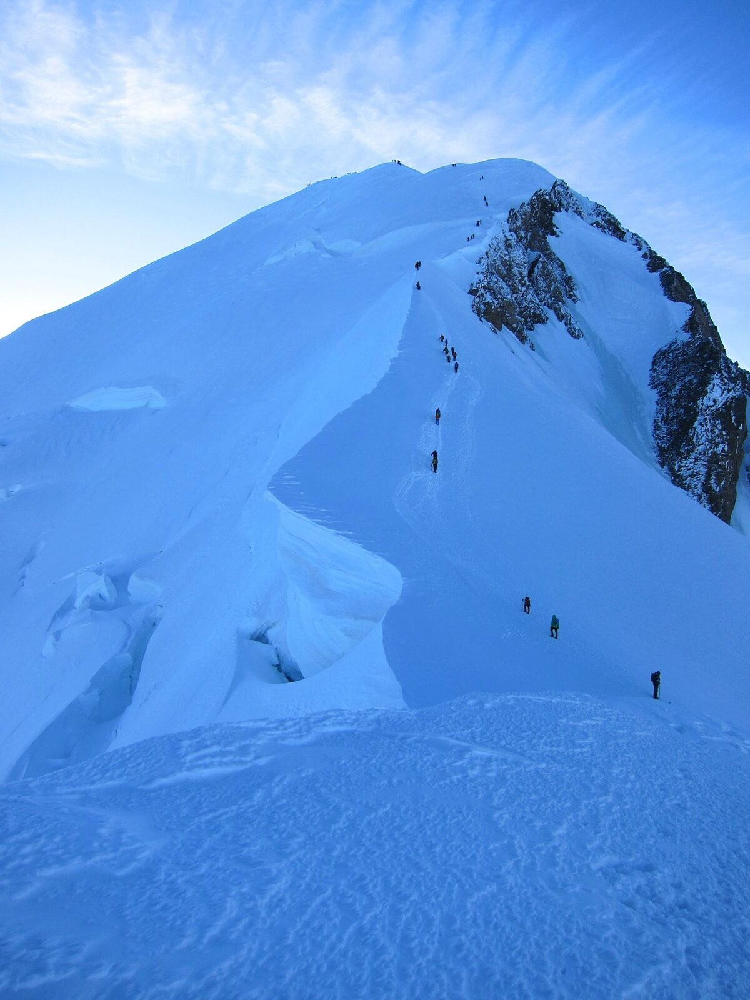

Can you climb Mont Blanc with no experience?
I did. Whether you should is a different question, and the rest of this post is my honest answer.
Day one was the Mer de Glace, the biggest glacier in France, reached from Chamonix on the Montenvers rack railway. It is retreating so fast that the ladders down to the ice get extended almost every year as the surface drops. We went down them in pouring rain, with maybe two hundred metres of nothing underneath, and then spent a couple of hours learning to walk in crampons.
That was the first time I had ever put a pair on. No winter routes before it, no build-up. Five days later I was on the roof of Europe.
The Cosmiques arête, and a guide I did not trust
Next we went up the Aiguille du Midi, through the gate, and down to the Refuge des Cosmiques. In the morning we climbed the Cosmiques arête and exited back through the Midi. It is a gorgeous piece of ground and I did not enjoy it at all.
I was roped to a guide called Michel, a kind man, older, smoking cigarettes at the belays, and I spent the whole route quietly unconvinced he was holding us properly. My climbing partner, a young woman from Paris, was badly equipped and out of her depth. At one point she came off a short rock step and landed on her helmet.
What Michel did next was the best thing I saw all week. He had her up, clipped and moving again within about fifteen seconds, chatting the whole time, giving the fall no room to become a fear. I have thought about that a lot since. On the mountain he was not the guide I would have chosen. In that moment he was exactly the right one.
Summit day
Back down to Chamonix for a night, then the train up and the long haul through the Couloir du Goûter to the Refuge du Goûter. We got in during the afternoon and watched the sun go down. I slept badly. My first night above 3,800 m, and I had no idea yet what altitude does to sleep.

Two in the morning, a small breakfast, out into the dark. The last section is a series of false tops, one after another, and it felt like it would NEVER end. We reached the summit around nine.
And then the top. Wow. What a view, what a feeling! Then the thing nobody tells you: you cool down within minutes, the altitude is working on you, and fifteen minutes later you are heading back down. I remember almost nothing of the descent except deciding not to care about my knees...
What it started
There were two guides. The other was Alexandre Ravanel, from one of the old Chamonix families. Everyone in every hut knew him, and we got on really well. And Michel, once he was off the mountain and at a dinner table, turned out to be a warm, very emotional man who talked about his daughter and everything he bought for her. Super nice guy, just not on the mountain.
That week taught me what altitude is, what low oxygen feels like, what happens to a body above 4,000 m. It also taught me that I wanted a lot more of it. Every expedition since has come out of those five days.